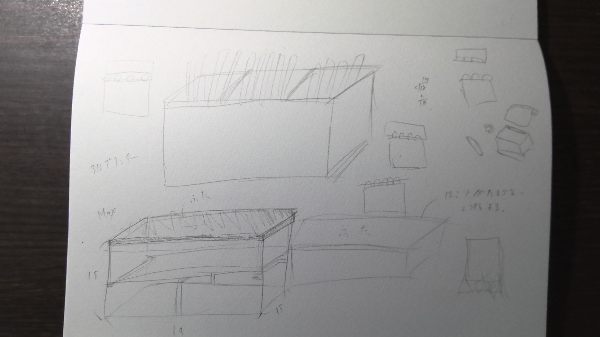
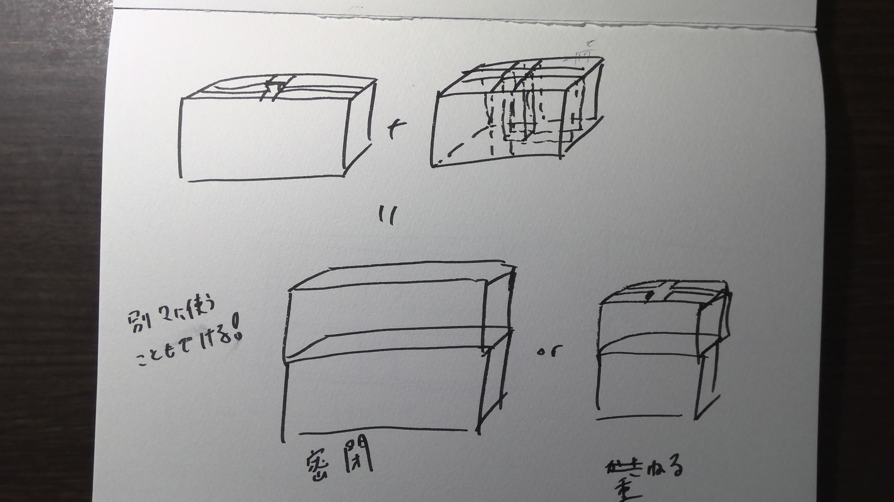
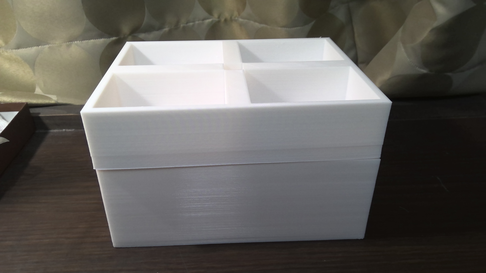
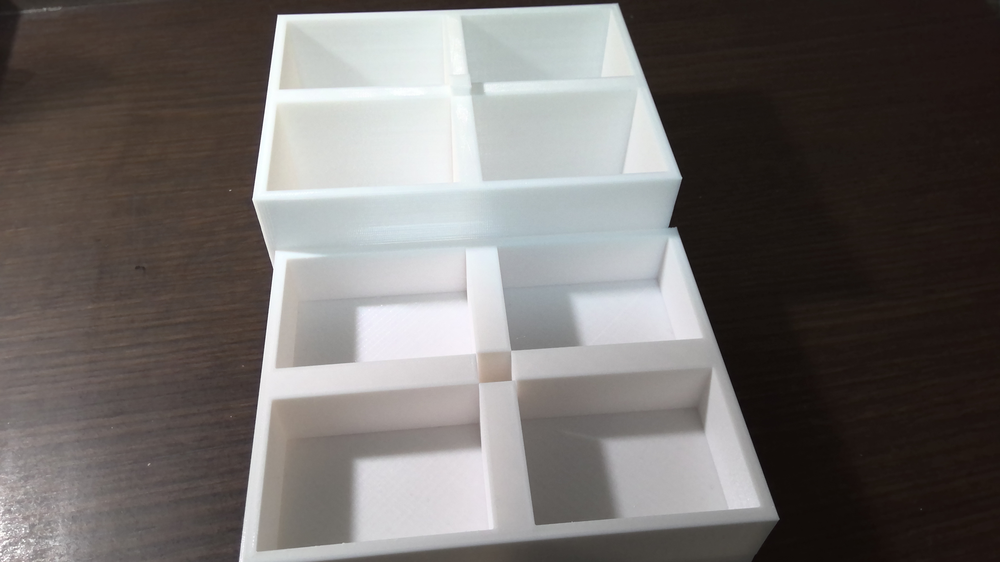
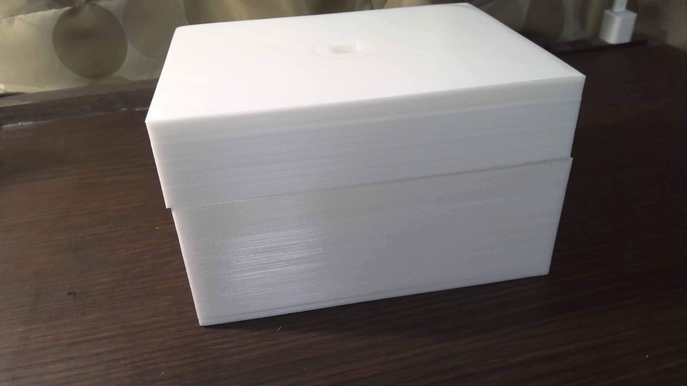

1.構想段階のスケッチ


2.設計ファイル
3.作品



4.作品の説明
この作品は二つの箱で出来ています。
一つは中が4つに区切られており、上の部分が出っ張っています。
もう一つは中は同じように4つに区切られていますが、真ん中は空洞になっています。
そうすることで二つの箱を組み合わせることができます。もちろん別々に使うこともできます。
真ん中がすっぽりと空いているので同じ向きで重ねることも向かい合わせて密閉させることも、入れるものによって変えることができます。
5.なぜこの作品を作ろうと思ったのか
今回の最終課題では自分が欲しいものをテーマに作成しました。
棚が散らかっていたのでそれを整理したいと思っていました。
小物を小分けできるようにしたいと思い、この作品を作りました。
また、３Dプリンターで作成した理由としては、木で作るより頑丈だし、木くずがでて汚くなるということがないと考えたからです。
6.制作プロセス
7.動画
8.感想
後期のデジファブを終えてみて、作ってみたいと思うものはいっぱいあった。
しかし、実際にモノを作ってみて、今の自分の技術では難しいモノもあると思った。
また、そのようなモノを作るには、もっと知識が必要だということも分かった。
だから今の自分に足りないものを見つけていろんなところから学んでいこうと思う。
次はもっとクオリティーの高いモノを作れるように頑張っていきたい。
デザイン演習Ⅰ・Ⅱトップページ
XBPトップページ